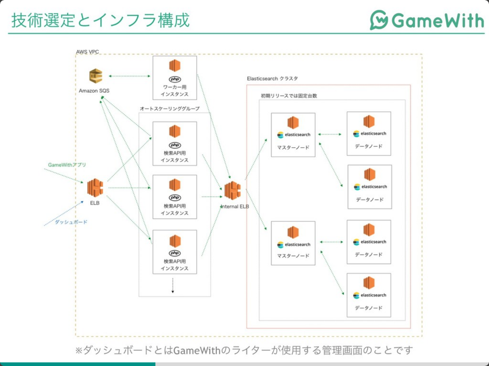

PHPカンファレンス仙台参加レポート
開発期間2ヶ月でElasticsearchをプロダクトに使ってリリースした話
TL;DR
- 技術選定を工夫した
- Go言語にしたかったが、社内でかける人がいないのでやめた
- GroongaとElasticsearchで迷った
- PV数が多いのでスケールしやすElasticsearchを選んだ
- 通常の保守も並行して行っていたので、開発で思いついたことはGithubのissueに上げまくって、忘れないようにした
- アクシデントで自分が開発できなくなることも考慮し、内容は自分以外も分かるように書いた
なぜこのセッションを聞いたのか
自分は業務で主にPHPを使った開発を行っており、かつ近くある案件で、データの集計を行う案件があります。
その案件で、どういった技術を使うか自分の中で考えており、その一案でElasticsearchが使えないか気になっており、情報収集を行いにいきました。
内容
検索APIの作成のため、ElasticsearchとPHP7.2+Laravel5.6を使った話です。
このセッションの内容は、スライドを読んでもらえると、概ね把握できるかなと思います。
少ないリソースでも新しい技術を導入したこと、他メンバーのスキルセットも考慮したことは、自分が技術を導入する際にも参考になります。
スライドに書いていない内容でピックアップは、Elastic社の方から指摘された内容を口頭でお話していました。
指摘内容は、 Elasticsearchのマスターノードは前面に出さないほうが良い という話でした。
マスターノードが落ちると、データノードも落ちてしまうので、それは避けた方が良いとのことです。
Elasticsearchを運用している人の、参考になれば幸いです。
https://speakerdeck.com/memory1994/php-conference-sendai-2019-presentation-slides?slide=21